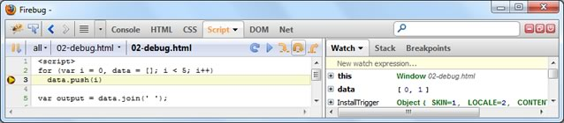
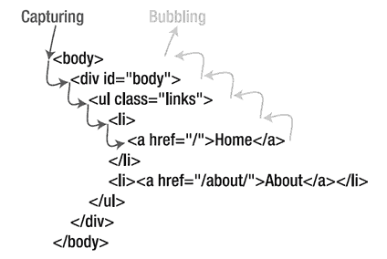

-
Client-side Languages for User Interface (UI) Design
- Structure and Content - HTML
- Presentation - Cascading Style Sheet (CSS)
- Behavior - JavaScript (JS)
- Covered HTML and CSS in last lecture; JavaScript today!
- Recent advances in JavaScript shifts the paradigm of web programming. Rich web applications are nowadays heavy in client-side code
User Interface Programming
IERG4210 Lecture 3
Dr. Adonis Fung
Information Engineering, CUHK
Paranoids, Yahoo!
IERG4210 Web Programming and Security, 2015 Spring.
Offered by Dept. of Information Engineering, The Chinese University of Hong Kong.
Copyright. Dr. Adonis Fung
Recall
Agenda
- The JavaScript language itself
- Basics, Variables
- Functions, Object-oriented Programming
- Arrays, Objects
- Looping over Arrays and Objects with for and while
- String Concatenation with Array
- Data Object Model (DOM)
- Events
JavaScript Basics (1/2)
- Governs the page behavior, to make it interactive
- Inclusion Methods into HTML (Similar to that of CSS):
<script>tags block rendering of subsequent contentTherefore, as opposed to CSS, put them inside
<body>instead of<head>whenever possible
JavaScript Basics (2/2)
- An Object-oriented Scripting Language
- Dynamic Typing - Variable types (number/string/boolean/null/undefined) are generally dynamic. (versus statically-typed, pros and cons?)
- Interpreted Language - Just-In-Time (JIT) Compilation at browsers
- Syntax - Similar to C, Java
- You're expected to master in C/C++/Java taught in CSCI Introduction to Computing :)
Variables (1/2)
-
Dynamic Typing - The type changes with its assigned value
var foo = 1; // (typeof foo) becomes 'number' foo = "hello"; // (typeof foo) becomes 'string'
- JavaScript uses Function Scoping (C uses block-level scoping)
-
Declaring in a function with
varbecomes local to that function - Declaring without
varbecomes global variable, i.e. underwindowvar foo = 1; // global variable - under window window.foo = 1; // equiv. to the above window['foo'] = 1; // equiv. to the above function a() { bar = 2; foo = 2; // global variables var yo = 1; // local variable to function a() }
-
Declaring in a function with
Variables (2/2)
-
More examples on Function Scoping (good for test/exam):
var foo = 1; function a(){ var bar = 2, foo = 2; foo2 = 3; return foo; } a() == 2; //true foo == 1; //true foo2 == 3; //true foo2 === '3' //false - type checking failed typeof bar == 'undefined' //true ===will check if the LHS and RHS are of the same type and value (or address for arrays and objects)
Functions
- Function Declaration Approaches:
function add(param1, param2) { return param1 + param2; }var add = function(param1, param2) { return param1 + param2; }function mat() { window.add = function(p1, p2) {return p1 + p2;} };According to function scoping, the first two approaches can become local, while the last one is declaring a global function.
- Annoymous Function are useful for event listeners:
function(param1) { /* do something here */ }To be discussed in slide 32.
Basic Object-Oriented JavaScript
- JavaScript has no such a syntax like
class. It's alsofunction. :)var Person = function(name, sex){ this.name = name || 'Unnamed'; this.gender = (sex && sex == 'F') ? 'F' : 'M'; }; Person.prototype.setName = function(name) {return this.name = name}; Person.prototype.getName = function() {return this.name}; Person.prototype.getGender = function() {return this.gender}; - To initialize a new instance and call the methods:
var p1 = new Person('Peter', 'M'), p2 = new Person('Niki', 'F'), p3 = new Person(); p1.getGender() == p3.getGender(); // true p3.getName() == 'Unnamed'; // true p3.getName = function() {alert('overrided')}; // overriding methodprototypeis the interface to add methods to every instance
Variable/Function Names can collide!
- Trivial Solution: Make the names sufficiently long to avoid collision.
- Let's view some Ugly JS Examples from HSBC:
https://www.ebanking.hsbc.com.hk/1/2/logon?LANGTAG=en&COUNTRYTAG=US - Doesn't look cool at all! :(
Namespace in JavaScript (Advanced Concept)
- Good Solution: Leverage Function Scoping, group them in a namespace
-
(function(){ var cart = window.cart = {}; // global var a, b, c; // private variables var calcSubTotal = function() { // private function // calculate subtotal } cart.checkOut = function() { // public function // go to the checkout page }; cart.add = function(id, quantity) { // store it in cookies/localStorage first calcSubTotal(); // display it in the shopping list }; })(); cart.calcSubTotal(); // undefined! as it's a private function cart.add(); // OK!
Arrays
- Dynamic-sized - Auto extend to have more elements
- Use as a Stack - methods available:
push(),pop() - Other Useful Methods -
join(),split(),shift(),indexOf(), etc...
var x = new Array(), //empty array y = [], //empty array z = ['Happy', 'New', 'Year', 2012]; x != y // true - although both are of empty content z.push('!'); // z is ['Happy', 'New', 'Year', 2012, '!'] z.join(' '); // returns "Happy New Year 2012 !" z.indexOf('Year'); // returns 2 - i.e. zero-indexed "JS is fun".split(' '); // returns ['JS', 'is', 'fun'] // since String is an array of character
Looping over an Array (1/2)
- Given:
var z = ['Happy', 'New', 'Year', 2012];
forloop in the traditional way:for (var i = 0; i < z.length; i++) { //do something with z[i], can use break and continue as in C }- If you like
whilebetter:var i = 0, length = z.length; while(i < length) { //do something with z[i], can use break and continue as in C i++; }
Looping over an Array (2/2)
- Generally, the fastest way to for-loop over an array
for (var i = 0, value; value = z[i]; z++) { //do something with value } - New approach to loop (Modern Browser support required):
z.forEach(function(value, index){ //do something with value })
Objects
- Dynamic-sized - Auto extend to have more elements
- Key-Value Pairs - Referenced with the key,
like a hash tablevar x = new Object(), //empty object y = {}, //empty object z = {"name":"Niki", "today":function(){return new Date().toDateString();}}; x != y; // true - although both are of empty content z.age = 6; // {"name":"Niki","today":func...,"age":6} z.age == z['age']; // true - can reference like array z.today(); // returns "Fri Jan 27 2012" for example
Looping over an Object
- Traditional Approach
for (var key in z) { // z[key] gives the value, can use break and continue as in C } - Array-style Approach
Object.keys(z).every(function(key){ // z[key] gives the value // return false means break; return true means continue; })Reference: https://developer.mozilla.org/en-US/docs/Web/JavaScript/Reference/Global_Objects/Array/Every
String Concatenation
- String Concatenation
- operator reloaded, means addition and concatenation
var w = 'Hello', x = 'World!', y = 1, z = 2012; w+' '+x == 'Hello World!' // all return true w+x+y+z == 'HelloWorld!12012' y+z+w+x == '2013HelloWorld!' w+x+(y+z) == 'HelloWorld!2013'
em... may be it's something good for midterm/exam :) - Joining an Array is Faster
- very often you will concat string
for (var i = 0, data = []; i < 5; i++) // fast data.push(i); data.join(' ') == '0 1 2 3 4'; // truefor (var i = 0, data = ''; i < 5; i++) // slow data += i + ' '; data == '0 1 2 3 4 '; // true, note the last space
JavaScript Debugging in Firebug
- Console Tab - to test out your code

- Script Tab - to debug your code line-by-line (Demo)

JavaScript w/Data Object Model (DOM)
DOM Basics
- Every <tag> corresponds to a Node Object, therefore having its own methods and properties. The enclosure of tags forms a hierachiecal tree
- For instance, LHS is translated into RHS

<html> <head> <title>My title</title> </head> <body> <a href="#">My link</a> <h1>My header</h1> </body> </html>
Image Source: http://www.w3schools.com/htmldom/default.asp
Referencing Elements (1/3)
- Traditional Approach -
getElementById()andgetElementsByTagName()<ul id="header"> <li>Hello</li> <li>World</li> </ul> <script type="text/javascript"> var ul = document.getElementById('header'); var li = ul.getElementsByTagName('li'); li[0].style.color = '#F00'; li[1].style.color = '#0F0'; </script>
Referencing Elements (2/3)
- Modern Approach - Use the CSS selectors with
querySelector()andquerySelectorAll()<ul id="header"> <li>Hello</li> <li>World</li> </ul> <script type="text/javascript"> var li = document.querySelectorAll('#header li'); li[0].style.color = '#F00'; li[1].style.color = '#0F0'; //re-color the second <lt> to #00F document.querySelector( '#header li:last-child').style.color = '#00F'; </script>
Referencing Elements (3/3)
- DOM Navigation (seldom used nowadays)
.parentNode,.childNodes,.nextSiblingetc... 
<p><strong>hello</strong>how are you doing?</p> <script type="text/javascript"> var p = document.querySelector('p'), strongs = document.getElementsByTagName('strong'); strongs[0].parentNode == p // true p.childNodes[0] == strongs[0] // true </script>
Image Source: J. Resig, "Pro JavaScript Techniques", p.90
Referencing Special Elements
- Some popular shorthands:
-document.headfor<head>
-document.bodyfor<body> - Referencing forms:
-document.forms[n]for the n-th child<form> - Referencing links:
-document.links[n]for the n-th child<a>and<area> - Referencing frames:
document.frames[n]for the n-th child<frame>/<iframe>- Inside a frame,
parentrefers to the immediate parent windowtoprefers to the highest parent window that its URL is reflected in the browser location bar
Common DOM Methods (1/3)
Changing Content / Adding New Elements
-
el.innerHTML = 'Your Current Time: ' + (new Date().toString());
-
// What if the string is untrusted?? el.innerHTML = 'something <img onerror="alert(\'DANGER\')" />'
-
Indeed, we need something as follows to defend against XSS, to be discussed in later lectures
el.innerHTML = 'something <img onerror="alert(\'DANGER\')" />' .replace(/</g,'<');What's the difference?
Read "Optional Reading - Resig07 - 02 Object-Oriented JavaScript" for OOP
Common DOM Methods (2/3)
- Adding New Elements (DOM-based)
// To dynamically load a javascript file if needed var script = document.createElement('script'); script.src = "dynamically-loaded.js"; script.type = "text/javascript"; // to add the script file as last child of document.body document.body.appendChild(script); // or, to add as the first child of document.body document.body.insertBefore(script, document.body.firstChild) - So, a few lines of code (LOC) can introduce an external file that has thousand LOC.
- Can you imagine now how to extend a
<ul>list? (Hints: use <li>) - Removing Elements (DOM-based)
document.body.removeChild(script); //to remove all children of el function killChildren(el){while(el.firstChild){el.removeChild(el.firstChild)}
Common DOM Methods (3/3)
- Changing Style Attribute (Forget this!)
- NOT recommended
el.style.color = '#F00';
- Changing Class Attribute (Preferred)
- to re-style an element and its children
el.className = 'newClass';
el.classList.add('newClass')ClassList is available in modern browser
- Changing the Current Location - apply to the current window/frame
window.location.replace('test2.html'); // redirect to test2.html window.history.go(-1); // back
Events
An element generates events that reflect its current status, which can be registered with event listening callback functions that respond accordingly.
<p>Hello, Click Me!</p>
<script type="text/javascript">
// assign a function to onclick handler
document.querySelector('p').onclick = function(e){
// display a simple popup dialog
alert('You clicked hello!');
}
</script>
About Events
- Asynchronous - Events are fired out of order
- Non-threaded - Events get queued and fired one at a time
- Some common types:
- Mouse: click, mouseover, mouseout, dragstart*, drop*
- Keyboard: keydown, keypress, keyup
- Touchscreen: touchstart*, touchmove*, touchend*
- Form/Input/Select: submit, change, focus, blur
- Un/Loading: load, beforeunload, error, readystatechange
- Timer:
setTimeout(),setInterval() - * denotes HTML5 new events
More on Event Types: Event reference | MDN
Event Phases (W3C Model)
Event propagates over the hierarchical chain of an element, going through the capturing, target, and bubbling phases.
- For instance, the target element
<a href="/">Home</a>is clicked below:
 - Event listeners with capturing order: <body>, <div>, <ul>, <li>, <a>
- Event listeners with bubbling order: <a>, <li>, <ul>, <div>, <body>
Note: Events in IE 8 or lower only bubbles, and CANNOT be captured
Image Source: J. Resig, "Pro JavaScript Techniques", p.114, 2007Event Listeners
- Traditional Approach (Cross-browser support, Bubbling)
el.onclick = function(e) { e = e || window.event; // IE passes the event in the global window alert(e.target); // e.target is a reference to the target element }Will multiple event listeners in IE get mixed up with the single event object? Why?
No. Because event is non-threaded in nature as said in slide 28 - W3C Standard (Supported in Firefox, WebKit, IE 9, etc)
el.addEventListener("click", function(e) { alert(e.target); }, false); // false for bubbling, true for capturingIE 8 or below provides
attachEvent()(I don't use it personally)
Event Listeners - traditional or W3C?
Which is preferred, traditional or W3C? Pros and Cons?
- Traditional is supported universally, yet risks from being overriden:
el.onclick = function(e) { /* given that you did something with el */ }; // BAD colleage can append the following code: el.onclick = function(e) { /* do his things here, which will remove yours */ };// SMART colleage can do complex things: (Are you a SMART one!?): (function(){ // Concept of Closure, 02-reading OO JS, p.27-30 var _onclick = el.onclick; // _onlick now becomes a local variable el.onclick = function(e){ // execute your handler first if it exists _onclick && _onclick.call(this, e); // AND operation: test next operand if exists // preserve the this and event object /* can now do his things */ } })(); // execute the annonymous function itself - W3C event handlers supports event capturing and cannot be overriden, yet it is not supported by IE non-standard compilant browsers
More in the reading - J. Resig, "Pro JavaScript Techniques", p.123, 2007
Event Listeners at Bubbling Phase
<p id="el_p">
<em>
<a href="test1.html" id="el_a">Click Me!</a>
</em>
</p>
<script type="text/javascript">
var clickMe = function(e){
e = e || window.event;
alert('e.target.id:' + e.target.id
+ ', this.id:' + this.id);},
el_p = document.getElementById('el_p'),
el_a = document.getElementById('el_a');
el_p.onclick = clickMe;
el_a.onclick = clickMe;
// Expected Results:
// First alert: e.target.id: el_a, this.id: el_a
// Second alert: e.target.id: el_a, this.id: el_p
</script>
e.targetalways refers to the target, whilethisrefers to the one handling the event- The event BUBBLING order: target first, and then up to the root ancestor
Event Listeners at Capturing Phase
<p id="el_p">
<em>
<a href="test1.html" id="el_a">Click Me!</a>
</em>
</p>
<script type="text/javascript">
var clickMe = function(e){
alert('e.target.id:' + e.target.id
+ ', this.id:' + this.id);},
el_p = document.getElementById('el_p'),
el_a = document.getElementById('el_a');
el_p.addEventListener("click", clickMe, true);
el_a.addEventListener("click", clickMe, true);
// Results:
// First alert: e.target.id: el_a, this.id: el_p
// Second alert: e.target.id: el_a, this.id: el_a
</script>
- The event CAPTURING order: root ancestor first, and then down to target
- Hence, as opposed to last example,
<p>now handles the event before<a>.
Prevent Default Action: preventDefault()
<p id="el_p">
<em>
<a href="test1.html" id="el_a">Click Me!</a>
</em>
</p>
<script type="text/javascript">
var clickMe = function(e){
e = e || window.event;
e.preventDefault(); // for W3C standard
return false; // for IE 8 or below
},
el_p = document.getElementById('el_p'),
el_a = document.getElementById('el_a');
el_a.onclick = clickMe;
// Results:
// No page navigation when clicked
</script>
- The default action, page navigation to test1.html, is prevented.
- This is important to stop a form submission (i.e. stopping submit event) if it is not properly validated!!
Stop Propagation: stopPropagation()
<p id="el_p">
<em>
<a href="test1.html" id="el_a">Click Me!</a>
</em>
</p>
<script type="text/javascript">
var clickMe = function(e){
e = e || window.event;
alert(this.id);
e.stopPropagation(); // for W3C standard
e.cancelBubble = true; // for IE 8 or below
},
el_p = document.getElementById('el_p'),
el_a = document.getElementById('el_a');
el_a.onclick = clickMe; // <a> first as bubbling
el_p.onclick = clickMe;
// Result: One alert appears and displays el_a,
// then page navigation occurs
</script>
- Event propagation is stopped at
el_a, thereforeel_pdoes not receive the event - Note: The use of
<iframe>/<frame>will implicitly block event from propagating - Note: We can avoid this even for overlapping clickable elements, if each of which is not an ancestor of the others. (Demo in Facebook Timeline Profile)
JavaScript Example
- The uses of
.getElementById()and.getElementsByTagName() - Here, 16 event listeners are registered (1 button each), how to reduce to only one?
- This was one of the exam questions to assess concept of events
- Hints: change less than 3 lines of code
Some Logistics...
- Deadlines:
- Assignment Phase 1: Jan. 26, 2015 5PM
- Quiz 2 comming soon.
- Credit Card needed for AWS registrations
- Classroom relocation beginning next week: NAH 213